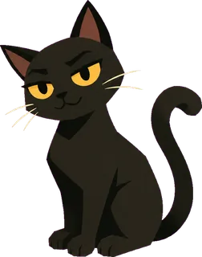

你透過機械穿山甲，走進動物的校園生活。從校門一路溜到醉夢湖與山上宿舍。探索全校地點、玩三件小惡作劇，再溜回家。
三件惡作劇成功，穿山甲平安回家。
先按任務提示找黑貓。靠近動物按 E 對話。任務與探索進度自動存在此瀏覽器。按 R 回基地，不會清除任務。從正門往前走，靠近校舍才會記在地圖上。方向鍵或 WASD 移動。靠近標記 1、2、3 的物品，按 E 搞怪。進入花叢後按住 C 蜷縮，才能藏起來。完成後回校門旁秘密基地，按 E 回家。
看人類頭上的泡泡：Z 是在打瞌睡，看不見你；手機是在低頭，只看得到正前方一小段。泡泡變橘色閃爍，代表他快抬頭了。
被抓到會回到基地，已完成的任務會保留。手機拖曳左下搖桿移動，輕推慢走，放手停止。右下互動／按住躲藏，可同時操作。地圖顯示校園足跡；藍鵲偵察在完成委託後出現。
走到哪裡，地圖就記到哪裡。● 深綠是你的位置 ● 紅色是目的地校園為遊戲化配置，請勿用於實地導航。
● 橘色是藍鵲看到的人類；關閉地圖後才會繼續移動。
插畫載入中…
